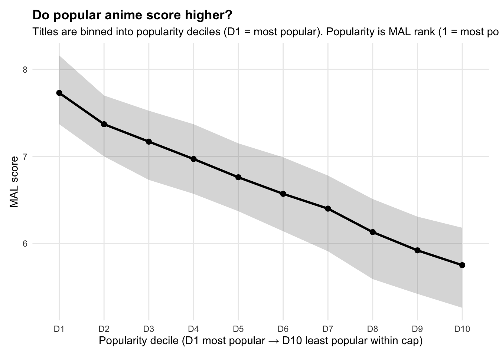

This MyAnimeList dataset covers 13,631 unique anime titles spanning 1917 to 2019—closer to a century-scale archive than a “modern seasonal TV” snapshot. That scope is what makes it worth analyzing as an industry story, not just a rankings list. It lets you trace anime from its earliest roots in short films and prewar theater shorts all the way through the standardized seasonal production machine of the 2010s. At the same time, the long horizon also means the dataset includes many niche or archival entries—shorts, early films, obscure OVAs and ONAs—that behave very differently from the mainstream TV hits most readers picture when they hear “anime.” The key interpretive move throughout this analysis is separating catalog reality (what exists) from fan-canon popularity (what people actually watch and talk about).
MORE THAN JUST TV
The format breakdown shows that TV is the largest single category but not the majority of the dataset. TV accounts for 4,260 titles (31.3%), followed by Movies (2,657; 19.5%), OVAs (2,378; 17.4%), Specials (2,003; 14.7%), ONAs (1,321; 9.7%), and Music (1,011; 7.4%). In other words, most titles in this archive are non-TV—which matters for every chart that follows. When you see a studio ranking, a genre score, or a popularity curve, you’re looking at a mixed system that includes theatrical releases, direct-to-video OVAs, broadcast specials, and web originals alongside the TV series that dominate the cultural conversation. The numbers don’t lie about which format fans think of first; they just remind you that the industry is bigger and stranger than the seasonal airing calendar suggests.
WHAT 6.38 ACTUALLY MEANS
On ratings, the dataset baseline is deliberately modest: the overall median MAL score is 6.38 (mean 6.29, standard deviation ~1.10). That number is the calibration point for everything that follows. When you rank studios or genres later, the real question isn’t “who broke 8”—it’s “who can stay consistently above 6.38 across a meaningful number of titles?” A show landing at 7.5 is genuinely performing above the field. A studio holding a median of 7.0 across 100+ titles is doing something structurally different from one that spiked once. MAL scores skew toward the center of the scale—most titles live in a middle band between 5 and 7—which means true greatness (8+) is a relatively thin slice of the total distribution, and anything labeled “elite” has cleared a real bar.
THREE WAYS TO BE THE BEST
The “top titles” lists reveal three distinct definitions of “best,” and they don’t fully overlap. Highest-rated measures prestige. Most members measures reach. Most favorited measures intensity—the kind of devotion that makes someone hit a heart button, not just add a show to their backlog. The biggest-audience list is dominated by cultural gateway shows: Death Note (the series that arguably got more people into anime than any other single title in the 2000s), Attack on Titan (which became a global mainstream event by its final arc), Sword Art Online (controversial but massive, essentially defining the isekai boom), One Punch Man (a meme-to-phenomenon pipeline in a single season), and Tokyo Ghoul (peak Crunchyroll-era viral reach). These are titles that didn’t just find an audience—they recruited one. Meanwhile the top favorites list skews toward the prestige canon: Fullmetal Alchemist: Brotherhood, which held the #1 MAL score for over a decade and remains the most common answer to “where do I start?”; Steins;Gate, the time-travel thriller that built one of the most devoted fanbases in the medium; and Hunter x Hunter (2011), which turned a long-running shonen adaptation into a consensus artistic achievement. Favorites capture something closer to devotion than raw scale—these are the shows people recommend to their closest friends, not just anyone who asks.
LONGEVITY IS NOT GREATNESS
The longest-running title in the dataset is a perfect counterexample to the idea that more episodes equals more impact. Lan Mao (Blue Cat)—a Chinese children’s TV series, not a Japanese production—tops the episode count at 3,057 episodes, with a MAL score around 5.64 and a small member count. It’s a useful wrinkle for two reasons. First, it’s a reminder that this dataset includes non-Japanese animation cataloged on MAL, meaning “anime” here is a broader category than the strict Japanese-origin definition. Second, and more importantly, it anchors one of the clearest through-lines in this analysis: longevity is usually an industrial scheduling outcome, not a signal of universal acclaim. Long-running shows tend to be kids’ programming, domestic serials, or evergreen formats designed to fill time slots reliably—not the prestige-driven storytelling that generates high scores and devoted fanbases. The dataset makes this point cleanly: anime has multiple axes of bigness—long-running, widely watched, highly rated, and most beloved—and the most interesting analysis comes from showing how those axes diverge.
# ============================================================# FAST FACTS (recommended)# Uses SAFE SETUP objects:# anime (title-level), anime_genres, anime_studios# If you don't have anime_genres/anime_studios, see fallback at bottom.# ============================================================# ---- scope ----anime <- anime %>%mutate(aired_from_year = lubridate::year(start_date))n_titles <-nrow(anime)year_min <- anime %>%summarise(min_year =min(aired_from_year, na.rm =TRUE)) %>%pull(min_year)year_max <- anime %>%summarise(max_year =max(aired_from_year, na.rm =TRUE)) %>%pull(max_year)type_counts <- anime %>%filter(!is.na(type), type !="") %>%count(type, sort =TRUE, name ="n") %>%mutate(pct = n /sum(n),pct_label = scales::percent(pct, accuracy =0.1) )# ---- peak lists (prestige vs reach vs intensity) ----top_rated <- anime %>%filter(!is.na(score), score >0) %>%arrange(desc(score)) %>%select(name, type, score, members, favorites) %>%slice_head(n =10)top_members <- anime %>%filter(!is.na(members), members >0) %>%arrange(desc(members)) %>%select(name, type, members, favorites, popularity, score) %>%slice_head(n =10)top_favorites <- anime %>%filter(!is.na(favorites), favorites >0) %>%arrange(desc(favorites)) %>%select(name, type, favorites, members, popularity, score) %>%slice_head(n =10)# ---- outlier: longest runner ----most_episodes <- anime %>%filter(!is.na(episodes), episodes >0) %>%arrange(desc(episodes)) %>%select(name, type, episodes, score, members, favorites) %>%slice_head(n =1)# ---- top genres/studios (by #titles tagged) ----top_genres <- anime_genres %>%filter(!is.na(genre), genre !="") %>%count(genre, sort =TRUE, name ="titles") %>%slice_head(n =10)top_studios <- anime_studios %>%filter(!is.na(studio), studio !="") %>%count(studio, sort =TRUE, name ="titles") %>%slice_head(n =10)# ---- score summary (nice for a one-liner) ----score_summary <- anime %>%summarise(mean_score =mean(score, na.rm =TRUE),median_score =median(score, na.rm =TRUE),sd_score =sd(score, na.rm =TRUE) )# ---- package into one object for printing in Quarto ----fast_facts <-list(n_titles = n_titles,year_range =c(year_min, year_max),type_counts = type_counts,score_summary = score_summary,top_rated = top_rated,top_members = top_members,top_favorites = top_favorites,most_episodes = most_episodes,top_genres = top_genres,top_studios = top_studios)fast_facts
$n_titles
[1] 13631
$year_range
[1] 1917 2019
$type_counts
# A tibble: 7 × 4
type n pct pct_label
<chr> <int> <dbl> <chr>
1 TV 4260 0.313 31.3%
2 Movie 2657 0.195 19.5%
3 OVA 2378 0.174 17.4%
4 Special 2003 0.147 14.7%
5 ONA 1321 0.0969 9.7%
6 Music 1011 0.0742 7.4%
7 Unknown 1 0.0000734 0.0%
$score_summary
# A tibble: 1 × 3
mean_score median_score sd_score
<dbl> <dbl> <dbl>
1 6.29 6.38 1.10
$top_rated
# A tibble: 10 × 5
name type score members favorites
<chr> <chr> <dbl> <dbl> <dbl>
1 Tanabata Monogatari OVA 10 55 0
2 Violence Voyager Movie 10 65 0
3 Tat-chan - Momo-chan no Fushigina Taiken OVA 9.8 51 0
4 Xing You Ji: Fengbao Famila ONA 9.33 171 0
5 Tatakae! Dokan-kun: Robolympic-hen TV 9.25 31 0
6 Pussy Movie 9.25 21 0
7 Fullmetal Alchemist: Brotherhood TV 9.24 1355349 120331
8 Steins;Gate TV 9.14 1139182 104173
9 Kimi no Na wa. Movie 9.14 900593 43260
10 Gintama° TV 9.13 232437 6375
$top_members
# A tibble: 10 × 6
name type members favorites popularity score
<chr> <chr> <dbl> <dbl> <dbl> <dbl>
1 Death Note TV 1610561 96146 1 8.66
2 Shingeki no Kyojin TV 1500958 70555 2 8.48
3 Sword Art Online TV 1442099 53268 3 7.58
4 Fullmetal Alchemist: Brotherhood TV 1355349 120331 4 9.24
5 One Punch Man TV 1195384 35969 5 8.71
6 Tokyo Ghoul TV 1148869 32274 6 7.98
7 Steins;Gate TV 1139182 104173 7 9.14
8 Angel Beats! TV 1105583 38504 8 8.29
9 No Game No Life TV 1098928 35211 9 8.38
10 Naruto TV 1091313 39356 10 7.9
$top_favorites
# A tibble: 10 × 6
name type favorites members popularity score
<chr> <chr> <dbl> <dbl> <dbl> <dbl>
1 Fullmetal Alchemist: Brotherhood TV 120331 1355349 4 9.24
2 Steins;Gate TV 104173 1139182 7 9.14
3 Death Note TV 96146 1610561 1 8.66
4 One Piece TV 76869 803871 36 8.53
5 Hunter x Hunter (2011) TV 76048 840943 30 9.12
6 Shingeki no Kyojin TV 70555 1500958 2 8.48
7 Code Geass: Hangyaku no Lelouch TV 68684 1082349 11 8.77
8 Tengen Toppa Gurren Lagann TV 54079 868611 25 8.72
9 Sword Art Online TV 53268 1442099 3 7.58
10 Clannad: After Story TV 50079 660561 58 9
$most_episodes
# A tibble: 1 × 6
name type episodes score members favorites
<chr> <chr> <dbl> <dbl> <dbl> <dbl>
1 Lan Mao TV 3057 5.64 448 0
$top_genres
# A tibble: 10 × 2
genre titles
<chr> <int>
1 Comedy 5219
2 Action 3197
3 Fantasy 2659
4 Adventure 2567
5 Sci-Fi 2224
6 Drama 2216
7 Kids 2205
8 Shounen 1771
9 Slice of Life 1583
10 Romance 1567
$top_studios
# A tibble: 10 × 2
studio titles
<chr> <int>
1 Toei Animation 737
2 Sunrise 457
3 Madhouse 340
4 J.C.Staff 322
5 Production I.G 297
6 TMS Entertainment 275
7 Studio Deen 264
8 Studio Pierrot 251
9 OLM 209
10 Nippon Animation 206
CHART 1 — ANIME RELEASES PER YEAR BY TYPE (LINE CHART)
# ---- Chart 1 (FIXED): drop Unknown, facets + raw line + LOESS only when enough data ----if (!("aired_from_year"%in%names(anime))) { anime <- anime %>%mutate(aired_from_year = lubridate::year(start_date))}valid_types <-c("TV", "Movie", "OVA", "Special", "ONA", "Music")chart1_df <- anime %>%filter(!is.na(aired_from_year),!is.na(type), type !="", type %in% valid_types) %>%count(year = aired_from_year, type, name ="n")total_by_year <- chart1_df %>%group_by(year) %>%summarise(total =sum(n), .groups ="drop")start_year <- total_by_year %>%filter(total >=10) %>%summarise(min_year =min(year, na.rm =TRUE)) %>%pull(min_year)end_year <-max(chart1_df$year, na.rm =TRUE) -1chart1_df <- chart1_df %>%filter(year >= start_year, year <= end_year)smooth_df <- chart1_df %>%group_by(type) %>%filter(dplyr::n_distinct(year) >=12) %>%ungroup()ggplot(chart1_df, aes(x = year, y = n)) +geom_line(linewidth =0.9, alpha =0.60) +geom_smooth(data = smooth_df,se =FALSE,method ="loess",span =0.35,linewidth =1.1 ) +facet_wrap(~ type, scales ="free_y", ncol =3) +scale_x_continuous(breaks = scales::pretty_breaks(n =8)) +scale_y_continuous(labels = scales::comma) +labs(title ="Anime titles released per year, by format",subtitle =paste0("Counts use first air date. LOESS shown only when enough yearly data exists. Window: ", start_year, "–", end_year, "." ),x =NULL,y ="Titles released (count)" ) +theme_minimal() +theme(panel.grid.minor =element_blank(),strip.text =element_text(face ="bold"),plot.title =element_text(face ="bold") )
This chart shows anime transforming from a low-volume, film-anchored medium into a modern multi-pipeline industry. In the early decades, Movies are the main visible output channel—and even then, output is sparse and irregular. The 1958 release of Hakujaden (Toei Animation’s first color feature film, widely considered the first anime feature in the modern sense) represents the kind of milestone that exists in a thin catalog rather than a crowded one. Production in this era is driven by individual studios making deliberate theatrical bets, not by an always-on serial system. The long flat baseline across most formats isn’t “no anime existed”—it’s that the industry hadn’t yet evolved the infrastructure, the distribution networks, or the financing mechanisms to ship content at scale. What you’re seeing in the early flat lines is a craft economy, not an industrial one.
THE HOME VIDEO EXPLOSION
The first real regime shift appears in the late 1980s into the early 1990s, where OVA output spikes sharply—and the spike is historically legible once you name the titles driving it. Megazone 23 (1985) is often cited as the first major OVA release, a direct-to-video science fiction film that proved the format could carry serious, adult-oriented storytelling outside the constraints of TV scheduling. What followed was a boom: Bubblegum Crisis (1987), Gunbuster (1988), Record of Lodoss War (1990), Tenchi Muyo! (1992)—a wave of productions that used home video as a distribution model rather than a workaround. OVAs were direct-to-consumer, less constrained by broadcast standards, and often used for higher-risk, niche, or premium projects that TV wouldn’t greenlight. The key point is that OVAs aren’t just a format—they’re evidence of a distribution shift. VHS made a new production lane economically viable, and the chart shows exactly when that lane opened. Their gradual decline through the 1990s and 2000s tracks the same logic in reverse: as TV and later streaming became dominant channels, the specific niche OVAs filled started to close.
HOW TV TOOK OVER
The modern industrial takeoff runs from the late 1990s through the 2010s, driven by multiple pipelines scaling simultaneously. TV is the core engine, and the inflection point is the mid-to-late 1990s: Neon Genesis Evangelion (1995) didn’t just become a phenomenon—it proved that TV anime could sustain psychological ambition and cultural impact serious enough to force the industry to treat the format as prestige territory, not just children’s programming. What followed was the build-out: the standardized seasonal production model (12–13 episodes per cour, committee-based financing, quarterly release cadence) that turned TV anime from irregular output into a reliable throughput machine. By the early 2000s, that machine was running the Big Three simultaneously—One Piece (1999–), Naruto (2002–2007), Bleach (2004–2012)—each logging hundreds of episodes and anchoring entire generations of fans. The steepening curve through the 2010s reflects what happens when that industrial system meets global streaming distribution: more titles, faster cycles, wider reach, and a structural incentive to keep the pipeline full.
THE GLUE BETWEEN SEASONS
Specials rise hard in the 2000s–2010s, which fits how the franchise economy works once TV is the dominant format. Specials aren’t standalone projects—they’re how large franchises maintain engagement outside the strict TV-season cadence. Recap episodes, bonus OVA-style installments packaged as “specials,” promotional one-offs tied to Blu-ray releases, crossover events, holiday installments—all of these get logged as Specials in the dataset. As the Big Three and their successors built out massive franchises with passionate year-round audiences, Specials became the connective tissue between cours. Think of them as a flexible support channel that expands as the broader franchise ecosystem expands: the more properties a studio has running, the more supplementary content gets produced and cataloged alongside them.
THE PLATFORM ERA ARRIVES
The most important late-era signal is ONA. It’s essentially nonexistent for most of the timeline and then explodes in the 2010s—a clean structural break marking the arrival of web-first distribution as a real production lane rather than an exception. Early ONAs were often short-form experiments: Shelter (2016, the Porter Robinson collaboration that went viral), YouTube-native shorts, promotional animations for games or music releases. Then the platform era arrived in force. Netflix’s push into anime originals—Devilman Crybaby (2018, Masaaki Yuasa’s reimagining that became the template for what a streaming-native anime could look and feel like), Violet Evergarden (co-produced with Kyoto Animation), Aggretsuko (a workplace comedy short-form series that found a global audience on the platform)—changed what “web-first” could mean at scale. ONAs reflect a structural reality: digital release lowers the barrier to entry, shortens cycles, diversifies episode structures, and creates a production lane that doesn’t depend on a broadcast slot or a home video window.
EVERYTHING GETS CATALOGED NOW
The Music facet ramps late and fast, which reflects two things at once: real growth in music video and promotional short production tied to the franchise economy, and a cataloging effect where modern web ecosystems index small-format releases far more completely than older archives did. Music videos and short animated promotions have always existed in the industry—idol tie-ins, OP/ED animation shorts, character songs—but they’re now being logged at scale. Because Music is lower-count and irregular, it’s naturally more volatile year-to-year. Its late rise still reinforces the same macro thesis as ONA: the 2010s aren’t just more anime—they’re more formats, more release types, and more of the industry’s total output being tracked.
INDUSTRIALIZATION, THEN DIVERSIFICATION
Anime’s growth is best described as industrialization followed by diversification. Movies anchor the early catalog. OVAs mark the home-video distribution boom of the late 1980s. TV becomes the throughput engine through the 2000s, running the Big Three and the standardized seasonal system simultaneously. ONAs mark the platform era. Specials and Music expand in the background as franchise infrastructure. Chart 1 sets the stage for everything that follows: once anime enters a high-throughput, multi-channel era, you should expect downstream changes in audience size, rating dynamics, studio behavior, and the economics of what gets produced—all of which the remaining charts map out.
CHART 2 — HIT-RATE OF HIGH-SCORING TITLES BY FORMAT (8+, 8.5+, 9+)
# ---- Chart 2: 8+ hit-rate by format + full summary table ----valid_types <-c("TV","Movie","OVA","Special","ONA","Music")chart2_df <- anime %>%filter(!is.na(score), score >0,!is.na(type), type %in% valid_types) %>%distinct(animeID, .keep_all =TRUE)type_quality <- chart2_df %>%group_by(type) %>%summarise(n_titles =n(),median_score =median(score, na.rm =TRUE),n_ge_8 =sum(score >=8, na.rm =TRUE),n_ge_85 =sum(score >=8.5, na.rm =TRUE),n_ge_9 =sum(score >=9, na.rm =TRUE),p_ge_8 =mean(score >=8, na.rm =TRUE),p_ge_85 =mean(score >=8.5, na.rm =TRUE),p_ge_9 =mean(score >=9, na.rm =TRUE),.groups ="drop" ) %>%mutate(type = forcats::fct_reorder(type, p_ge_8),label =paste0( scales::percent(p_ge_8, accuracy =0.1)," (", n_ge_8, "/", scales::comma(n_titles), ")" ) )ggplot(type_quality, aes(x = p_ge_8, y = type)) +geom_col(alpha =0.9) +geom_text(aes(label = label), hjust =-0.05, size =3.6) +scale_x_continuous(labels = scales::percent_format(accuracy =1),limits =c(0, max(type_quality$p_ge_8) *1.18) ) +labs(title ="Which anime format is most likely to be an 8+?",subtitle ="Bars show the share of titles scoring ≥ 8 in each format. Labels include sample size (n).",x ="Percent of titles scoring 8+",y =NULL ) +theme_minimal() +theme(panel.grid.minor =element_blank())
This chart answers a brutally practical viewer question: “If I pick a title at random in this format, what are the odds it’s actually great?” Instead of comparing average scores—which compress differences and hide the elite tail—you’re measuring hit-rate: the share of titles that clear an “I’d recommend this” threshold. Here that threshold is 8+, with 8.5+ and 9+ included as progressively rarer prestige tiers. The first headline is clear: TV is the highest-yield hunting ground for 8+ titles. About 8.2% of TV titles are rated 8+ (346 out of 4,240), meaningfully higher than every other format. The next closest is Movies at 4.8% (128/2,640), then OVA at 3.0% (70/2,348), Special at 2.1% (41/1,996), ONA at 1.2% (16/1,308), and Music at 0.2% (2/985). Read that as a simple random-pick expectation: out of 100 picks, TV gives you ~8 hits, Movies ~5, OVAs ~3, Specials ~2, ONAs ~1, and Music essentially zero. It’s probability, not vibes.
WHY TV WINS
What makes TV’s lead especially meaningful is that it’s not just “TV has more titles.” You’ve already normalized by format—TV is winning on rate, which means something structural is happening. TV is where the medium’s consensus classics tend to live: Fullmetal Alchemist: Brotherhood (MAL’s long-running #1, a 64-episode TV series), Attack on Titan, Steins;Gate, Hunter x Hunter (2011), Vinland Saga, Demon Slayer—all TV productions. Weekly release cycles build sustained communities, long-form storytelling allows character investment that movies can’t match in runtime, and seasonal discourse creates the kind of collective attention that stabilizes a title’s reputation at the top of the rating scale. TV isn’t only the main output pipeline—it’s the highest-yield engine for top-end audience approval, not because every TV show is good, but because the format’s conditions favor the slow-burn consensus that produces durable 8+ scores.
THE PRESTIGE MYTH
Movies are the interesting second-place result because people often assume film is anime’s prestige lane—and for good reason. Spirited Away won the Academy Award for Best Animated Feature in 2003, the first (and still only) anime film to do so. Your Name (2016) became the highest-grossing anime film in history at the time of its release, crossing $358 million worldwide. Princess Mononoke, Akira, Grave of the Fireflies—the upper tier of anime film is genuinely among the most celebrated animation ever made. But the chart reveals what happens when you look at the whole Movies bucket rather than its famous ceiling: it’s a deeply mixed market. Franchise extensions, compilation films that recut TV arcs for theaters, side stories designed for existing fans, smaller productions that never find wide distribution—all of these sit in the same bucket as Ghibli. That mix drags the hit-rate to 4.8%, well below TV’s 8.2%, not because anime films are bad, but because “anime film” as a category includes everything from Spirited Away to a 45-minute recap movie packaged as a theatrical event. When a film does land at the top, it lands hard—but the odds per random pick are lower than TV.
GEMS IN A DEEP CATALOG
The OVA result is historically coherent. OVAs have produced some of the medium’s most celebrated niche works—Hellsing Ultimate (the gold-standard vampire action OVA), Legend of the Galactic Heroes (a 110-episode space opera released entirely as OVAs between 1988 and 1997, which maintains an exceptionally high MAL score to this day), FLCL (6 episodes, endlessly referenced, never quite replicated). These are real titles that clear the 8+ bar. But as a bucket, OVAs also include enormous amounts of deep catalog material: forgotten direct-to-video releases from the 1980s and 1990s, niche genre experiments that found small audiences, fan-service releases attached to existing franchises. The hit-rate of 3.0% reflects that full range—OVAs can absolutely produce standout titles, but the probability of hitting one by random selection is lower than TV or Movies. OVAs are a reminder that format innovation doesn’t automatically translate into mass approval; it creates a wider range of outcomes, from cult classics to forgotten experiments.
THE SUPPORT LANES
Specials and ONAs function as secondary lanes, and their hit-rates reflect exactly what those lanes are designed to do. Specials exist to extend franchise attention between seasons—recap episodes, holiday one-offs, Blu-ray bonus content, promotional shorts. Their job isn’t to produce iconic standalone works; it’s to maintain engagement within an existing property’s orbit. A lower hit-rate is logical when you’re pulling from a population of support content rather than ambitious originals. ONAs are more heterogeneous: some are top-tier originals (Devilman Crybaby sits well above 8 and is an ONA), but many are short-form experiments, platform promotional releases, or web-native projects where production constraints and distribution priorities differ fundamentally from TV. The ONA line reads like a platform-era pattern: more content, faster cycles, wider variance, and lower probability that any single title builds the sustained audience consensus that produces a locked-in 8+ score.
HOW RARE IS A MASTERPIECE
The rarity ladder is where the story sharpens further. Even in the best-performing format, 8.5+ is only 1.9% of TV titles and 9+ is only 0.3%—roughly 11 titles out of 4,240. That’s the quiet truth the chart exposes: masterpiece-level scores are rare in every format. TV doesn’t produce floods of 9+ shows; it just gives you the best odds in a world where truly elite titles are scarce everywhere. The summary table adds a second context layer: median score by format. TV not only has the best 8+ hit-rate—it has the highest median (6.79), meaning the entire TV distribution is shifted upward relative to other formats. Movies and OVAs sit at 6.30, Specials at 6.44, ONA at 5.69, Music at 5.19. TV isn’t winning only because it creates more hits— it’s winning because the typical TV title is rated higher too.
SHOP NEAR THE ENTRANCE
If you want the best odds of finding an 8+ title quickly, TV is the most efficient format to browse—not because films and OVAs don’t have elite entries (they do, and some of the most celebrated works in the medium live there), but because the hit-rate per random pick is highest in TV, and the median floor is highest in TV. In your newsletter arc, Chart 2 pairs directly with Chart 1: once anime becomes a high-throughput, multi-pipeline industry, TV remains the lane where audience consensus and top-end ratings concentrate—even as the platform era expands every other release type simultaneously.
CHART 3 — POPULARITY RANK VS SCORE (LOG SCALE)
# ============================================================# Chart 3 (REPLACEMENT): Popularity deciles -> score (median + IQR)# + a fast-facts table for the same bins## Idea:# - Popularity is MAL rank (1 = most popular)# - Use log10(popularity) and cut into 10 equal-count bins (deciles)# - Plot median score with IQR ribbon (25th–75th percentile)# - Include a summary table to read exact figures## Assumes: `anime` exists (title-level) with columns:# animeID, score, popularity, type# ============================================================valid_types <-c("TV","Movie","OVA","Special","ONA","Music")# ---- base universe (title-level, cleaned) ----plot_df <- anime %>%filter(!is.na(score), score >0,!is.na(popularity), popularity >0,!is.na(type), type %in% valid_types) %>%distinct(animeID, .keep_all =TRUE)pop_cap <-12000# keep consistent with your prior Chart 3df_cap <- plot_df %>%filter(popularity <= pop_cap) %>%mutate(log_pop =log10(popularity) )# ---- decile bins (equal-count bins on log popularity) ----# NOTE: since rank is reversed conceptually, Decile 1 = most popular groupdf_bins <- df_cap %>%mutate(pop_decile =ntile(log_pop, 10),pop_decile =factor(pop_decile, levels =1:10,labels =paste0("D", 1:10)) )# ---- summarise by decile ----chart3_bins <- df_bins %>%group_by(pop_decile) %>%summarise(n =n(),pop_min =min(popularity, na.rm =TRUE),pop_max =max(popularity, na.rm =TRUE),pop_med =median(popularity, na.rm =TRUE),score_med =median(score, na.rm =TRUE),score_q25 =quantile(score, 0.25, na.rm =TRUE),score_q75 =quantile(score, 0.75, na.rm =TRUE),score_mean =mean(score, na.rm =TRUE),share_8p =mean(score >=8, na.rm =TRUE),.groups ="drop" ) %>%mutate(# nice label: show the popularity rank range inside each decilepop_range =paste0(comma(pop_min), "–", comma(pop_max)) )# ---- plot (median + IQR ribbon) ----ggplot(chart3_bins, aes(x = pop_decile, y = score_med, group =1)) +geom_ribbon(aes(ymin = score_q25, ymax = score_q75), alpha =0.20) +geom_line(linewidth =1.1) +geom_point(size =2.2) +labs(title ="Do popular anime score higher?",subtitle =paste0("Titles are binned into popularity deciles (D1 = most popular). ","Popularity is MAL rank (1 = most popular); capped at rank ≤ ", pop_cap, ". ","Line = median score; band = IQR (25th–75th percentile)." ),x ="Popularity decile (D1 most popular → D10 least popular within cap)",y ="MAL score" ) +theme_minimal() +theme(panel.grid.minor =element_blank(),plot.margin =margin(10, 10, 10, 10),plot.title =element_text(face ="bold"),plot.subtitle =element_text(size =11, lineheight =1.1) )

# ---- table (fast facts for analysis) ----chart3_table <- chart3_bins %>%transmute(`Popularity decile`= pop_decile,`Titles (n)`= n,`Popularity rank range`= pop_range,`Median popularity rank`=round(pop_med, 0),`Median score`=round(score_med, 2),`IQR (25–75%)`=paste0(round(score_q25, 2), "–", round(score_q75, 2)),`Mean score`=round(score_mean, 2),`Share 8+`=percent(share_8p, accuracy =0.1) )knitr::kable( chart3_table,caption =paste0("Chart 3 fast facts by popularity decile (rank ≤ ", pop_cap,"). D1 contains the most popular titles; D10 the least popular within the cap." ))
Chart 3 fast facts by popularity decile (rank ≤ 12000). D1 contains the most popular titles; D10 the least popular within the cap.
Popularity on MyAnimeList is an attention register—a rank that tracks how many people have added a title to their lists, not whether it is objectively great. But the two turn out to be deeply correlated. Within the top 12,000 popularity ranks, the median score slides from 7.73 in D1 (most popular) to 5.75 in D10 (least popular)—almost a two-point drop across the distribution. The “elite” zone becomes rare with startling speed: 34.4% of D1 titles score 8+, but that collapses to 12.4% in D2, 5.5% in D3, and near-zero through much of the bottom half. D1 is where the front gallery lives: Death Note, Fullmetal Alchemist: Brotherhood, Attack on Titan, Sword Art Online, One Punch Man—titles with member counts in the millions that have been watched, finished, rated, argued about, and recommended so many times that their scores have stabilized into something close to cultural consensus. The deeper deciles are the archive: vast, uneven, and mostly unvisited.
WHY THE POPULAR SHOWS SCORE HIGHER
The correlation isn’t accidental—it’s structural. When a show like Attack on Titan builds an audience of millions, it gets rated by millions. That volume stabilizes the score: outlier ratings (the 10s from devoted fans, the 1s from people who bounced in episode two) get averaged out by the mass in the middle, and what’s left is a reliable signal. Low-popularity titles have the opposite problem: a few hundred ratings means a few polarized opinions carry outsized weight, producing scores that are either artificially inflated or deflated depending on who showed up. The scores in D1 aren’t necessarily “more correct”—they’re more statistically stable, which in a rating ecosystem reads as higher and more trustworthy. Popularity doesn’t just reflect quality; it manufactures the conditions that make quality legible.
FAME MAKES ITSELF
There’s a second mechanism at work beyond statistical stability: visibility creates more visibility. When Sword Art Online premiered in 2012, it became one of Crunchyroll’s most-streamed titles almost immediately—which meant it appeared at the top of every recommendations list, every “what to watch next” algorithm, and every “most popular this season” banner. That placement drove more viewers to it, which drove more ratings, which kept it ranked high, which drove more viewers. This is the feedback loop that economists call cumulative advantage and anime fans just call hype: early traction begets more traction, and the gap between a show that catches fire in week one and a show that doesn’t can widen dramatically even if the underlying quality is similar. It’s why Sword Art Online has more members than many objectively higher-rated shows—it won the attention game early and the algorithm kept paying out. The decile gradient you see in this chart is partly a quality signal and partly a record of which shows got lucky with timing, placement, and platform momentum.
WHAT LIVES IN THE BACK ROOMS
The bottom deciles aren’t full of bad anime—they’re full of unseen anime. Legend of the Galactic Heroes, a 110-episode space opera OVA series from 1988, maintains one of the highest MAL scores in the dataset despite sitting deep in the popularity ranks; it simply never had the distribution infrastructure to build a mass audience. Dozens of titles from the 1980s and 1990s exist in similar positions: genuinely accomplished work that accumulated small, devoted followings and correspondingly small member counts, leaving their scores statistically fragile. The wide IQR bands in D7 through D10 tell that story visually—more variance, more noise, more titles where the score reflects a few hundred passionate fans rather than a broad cultural verdict. The back rooms are where discovery happens, but also where the expected score falls and the signal-to-noise ratio drops. The question isn’t whether great anime exists out there—it does—it’s whether you’re willing to accept lower average odds and higher variance in exchange for the chance of finding something the algorithm never surfaced.
THE ALGORITHM PROBLEM
The gradient this chart reveals isn’t purely organic—it’s partly manufactured by the discovery systems that sit on top of the catalog. Streaming platforms and recommendation engines systematically favor already-popular titles: Crunchyroll’s homepage, Netflix’s “trending” row, MAL’s own “top anime” lists all amplify visibility for content that already has high member counts. Research on recommender systems calls this popularity bias—the tendency of algorithms to over-expose the head of the distribution and under-represent the long tail, compounding existing visibility gaps over time. In practical terms, this means the decile gradient you’re observing isn’t just “popular = good.” It’s also “popular = gets recommended = gets more popular = gets more ratings = looks more authoritative.” The back rows of the archive stay undiscovered not only because the work is less compelling—but because no system is actively pointing people toward them.
SHOP WITH YOUR EYES OPEN
The practical takeaway is crisp: popularity is a strong signal of higher average ratings, but it is also a mechanism that concentrates attention. If you want reliably high-scoring picks, you shop near the entrance—D1 and D2, where the median score stays above 7 and the 8+ hit-rate is meaningful. If you want discovery, you walk deeper into the stacks—accepting that the expected score falls, the variance rises, and the chance of finding something genuinely idiosyncratic and underseen increases. Neither strategy is wrong. But knowing which one you’re running, and why the distribution looks the way it does, makes you a smarter browser of a catalog that is much larger and stranger than any algorithm is going to show you on its own.
CHART 4 — WHICH STUDIOS SCORE HIGHEST? (MEDIAN SCORE WITH IQR)
This chart answers a deceptively hard question—which studios score highest on MyAnimeList—by using median score (the typical title) instead of averages, which can be hijacked by a single massive hit or a string of misfires. Across the top-20 studios with at least 20 titles, the leaders cluster tightly around the low-to-mid 7s, while the overall median of all studio-credited titles sits at ~6.38. In other words: once you filter to studios with real volume, the top tier isn’t separated by a full point—it’s separated by tenths. This is exactly what you’d expect in a mature rating ecosystem where most shows occupy the same band. The leaderboard here isn’t about who made the single best show. It’s about who can stay above the platform’s baseline across a meaningful number of titles—which is a much harder thing to do.
BONES AND KYOANI: THE GOLD STANDARD
At the top, Bones and Kyoto Animation stand out as the clearest examples of scale and quality coexisting. Bones’ case rests on a catalog that includes some of the most celebrated titles in the medium: Fullmetal Alchemist: Brotherhood—MAL’s long-running #1, a 64-episode adaptation widely considered the gold standard of shonen storytelling—alongside Mob Psycho 100, My Hero Academia, Soul Eater, and Noragami. That’s not a studio that peaked once; it’s a studio that has produced consensus favorites across multiple genres and eras. The median stays high because the floor stays high. Kyoto Animation is a different kind of story. Where Bones operates at volume, KyoAni built its reputation on deliberate, almost obsessive craft—an in-house training pipeline, refusal to outsource animation work, and a catalog defined by visual precision: Clannad, K-On!, Hibike! Euphonium, A Silent Voice, Violet Evergarden. In July 2019, an arson attack on their main studio killed 36 people—the deadliest mass killing in Japan in decades. The industry’s response was immediate and global: crowdfunding campaigns, tributes from studios worldwide, a production community that suddenly understood KyoAni not just as a company but as a community of artists. That tragedy reframed how the anime world talks about what studios actually are. Their median score in this chart is a data point; what sits behind it is something closer to a legacy.
THE BOUTIQUE STUDIOS
A second pattern is the presence of smaller studios whose high medians are built on precision rather than volume. White Fox is the clearest example: a studio whose entire reputation rests on a handful of titles executed exceptionally well. Steins;Gate—the time-travel thriller that holds one of the highest MAL scores in the dataset and built one of the most devoted fanbases in the medium—is a White Fox production. So is Re:Zero, which redefined what an isekai could do with psychological depth and consequence. Two franchises, enormous cultural footprint, very small catalog. That’s the boutique model: high selectivity, high hit-rate, high sensitivity to any single title underperforming. David Production operates similarly: closely associated with JoJo’s Bizarre Adventure (all animated parts) and Cells at Work, a studio whose identity is essentially inseparable from the franchises it’s built around. Both studios show tight IQRs in the chart—small spread around the median—which is the signature of a studio that doesn’t swing wildly because it doesn’t take many swings.
THE WILD CARD
Trigger is the most interesting outlier in this chart because its wide IQR is not a weakness—it’s a brand signature. Founded in 2011 by ex-Gainax staff including director Hiroyuki Imaishi, Trigger built its identity on loud, high-style, unapologetically maximalist originals: Kill la Kill, Little Witch Academia, SSSS.Gridman, Promare. These are shows that don’t try to appeal to everyone—they go hard in a specific direction and trust that the audience who connects with that direction will connect deeply. The result is exactly what the chart shows: a high median (the fans who stay love it) alongside a wide IQR (the audience that bounces bounces hard). When you see a wide IQR bar on this chart, read it as variance in reception, not inconsistency in effort. Trigger makes exactly the shows it intends to make. Whether that lands depends entirely on whether you’re the kind of viewer they’re making them for.
THE INDUSTRIAL GIANTS
At the other end of the output spectrum sit studios like A-1 Pictures and Studio Deen—large dots on the chart, lower medians, and a catalog range that explains exactly why. A-1 Pictures is part of the Aniplex/Sony machine, which means it operates at industrial scale: Sword Art Online, Your Lie in April, Anohana, Erased, Kaguya-sama: Love Is War all carry the A-1 credit. That’s a range from consensus classics to broadly popular but divisive titles, and the median reflects it. You don’t run hundreds of productions without absorbing significant variance in quality—some projects are passion-driven, others are committee-driven, and the catalog average is the average of both. Studio Deen carries the most historically loaded reputation in this chart: “Deen quality” became an actual meme in the anime community, shorthand for inconsistent or underwhelming animation on otherwise solid source material (the original Fate/stay night adaptation is the canonical example). Their lower median isn’t surprising—it’s a data-driven confirmation of a reputation that fans had already reached on their own.
WHAT THE DOT SIZE TELLS YOU
The dot size in this chart encodes output volume, and it’s worth reading alongside the median rather than separately. A small dot with a high median (White Fox, David Production) says: high precision, low sample size, sensitive to change. One underperforming franchise could meaningfully shift that median. A large dot with a high median (Bones) says: the quality is load-bearing across real volume, which is a structurally harder thing to sustain. A large dot with a lower median (A-1 Pictures, Studio Deen) says: industrial scale with mixed results, which is essentially the expected outcome when a studio is producing enough content to serve every corner of the market. The color layer—TV share—adds one more read: studios with high TV share are building their reputation through the seasonal pipeline, while studios with lower TV share are mixing in films, OVAs, and specials that behave differently in the rating ecosystem. Neither is better; they’re just different business models, and the chart lets you see both at once.
THE REAL WINNER HERE
The studios that top this chart aren’t the ones with the single biggest hit—almost every studio in anime has at least one title that broke through. The winners are the ones whose typical show stays above the platform’s baseline despite real volume. That’s a different kind of achievement than a peak. It requires consistent sourcing (choosing the right projects), consistent execution (delivering on what the source material promises), and consistent audience trust (building the kind of reputation that makes fans show up for your next title before they know what it is). Bones and Kyoto Animation have all three. That’s why they’re at the top of this chart, and why the distance between them and the industrial giants below them—measured in tenths of a score point—represents something much larger than the numbers suggest.
In this chart, each point is a genre tag (multi-label, so a single title can contribute to several bubbles). The x-axis is median MAL popularity rank (lower number = more popular), while the y-axis is median MAL score—a rough map of attention versus reputation. The dense middle cluster—Comedy, Action, Sci-Fi, Fantasy, Adventure—is the museum’s main hall: large bubbles, broad reach, and median scores that settle in the mid-6s rather than the top of the scale. These are the genres that define anime’s public face. Action is where the Big Three live (One Piece, Naruto, Bleach), each running hundreds of episodes and accumulating members by the million. Comedy is where Gintama sits—a show that somehow managed to be simultaneously one of the longest-running comedies and one of the highest-rated anime on the platform, a genuine outlier in a genre where most titles land in the mid-pack. Sci-Fi has Steins;Gate and Neon Genesis Evangelion at the top and hundreds of more obscure titles dragging the median down. In large genres, the ceiling is real but so is the floor, and the median reflects the full distribution, not just the titles you can name.
MORE TITLES, MIDDLE SCORES
The pattern across the main hall genres is consistent: high volume produces middle medians. When a genre is a production workhorse—when studios are shipping Action or Fantasy titles every season because that’s what the market demands—you get a wide range of quality. Some projects are passion-driven adaptations of beloved source material; others are committee-greenlit productions chasing a trend. The median score settles where the full range averages out, which in a competitive, high-throughput genre is reliably “watchable but not exceptional.” This isn’t a knock on these genres—it’s what happens when any category scales. The more Action anime gets made, the more dilution happens around the hits. Dragon Ball Z and Attack on Titan don’t stop being great because there are five hundred other action shows in the dataset; they just stop being statistically representative of what a random Action pick looks like.
THE CURATOR’S ROOMS
The more interesting story is in the genres that score like prestige niches while remaining only moderately popular. Mystery stands out with a median score of 7.27 and a 16.5% share of titles scoring 8+—the highest 8+ share of any genre in the table. The titles driving that number are exactly what you’d expect from a genre that rewards patience and craft: Monster (Naoki Urasawa’s slow-burn thriller, 74 episodes, universally regarded as one of the great anime of the 2000s), Hyouka (Kyoto Animation’s understated high school mystery series, beloved by the fans who find it and largely invisible to everyone else). Police follows a similar logic: Psycho-Pass and Ghost in the Shell: Stand Alone Complex anchor a genre that produces fewer titles but lands them at a higher rate. These are the curator’s rooms—quieter, less trafficked, but reliably satisfying for the visitor who makes it inside. The genres themselves act as a filter: they attract viewers who specifically want that kind of storytelling, which means the audience rating them tends to be self-selected and engaged rather than casual.
THE HISTORICAL PROBLEM
The biggest “hidden gem” signal in the dataset belongs to Historical—not because it’s the highest-scoring genre, but because of how far its popularity rank sits from its score. With 964 tagged titles, a median score of 6.56, and a median popularity rank of 9,220, Historical sits deeper in the archive than almost any other genre while maintaining a respectable reputation among those who find it. The titles in this space are genuinely accomplished: Vinland Saga (the Viking epic that became one of the most critically praised anime of the late 2010s, a show that takes its historical setting seriously in ways most anime don’t), Kingdom (one of the longest-running and most consistently rated historical epics in the dataset), The Rose of Versailles (a foundational shojo title from 1979 that helped define the genre and still maintains a devoted following). What keeps these shows out of the mainstream isn’t quality—it’s friction. Historical anime often demands patience, prior investment in setting and context, and tolerance for slower pacing than the action-driven seasonal titles that dominate the platform’s front page. In a market where attention is the scarcest resource, friction is a serious disadvantage regardless of what’s on the other side of it.
WHY KIDS SCORES LAST
Kids is the genre where the gap between cultural footprint and MAL score is most stark. With 2,158 tagged titles (16.0% of the dataset), it’s one of the largest genre categories—and yet it shows a median score of 5.86 and a 1.0% share of 8+ titles, the lowest of any major genre. This isn’t because Doraemon or Pokémon are bad shows—both are enormous cultural institutions in Japan and globally, shows that have shaped the childhoods of multiple generations. The low scores reflect something about who rates on MAL and what they’re rating for. MAL’s rating culture skews toward adult viewers applying adult critical frameworks: narrative complexity, thematic depth, emotional ambiguity, animation craft in service of mature storytelling. Children’s programming is optimized for entirely different goals—accessibility, repetition, gentle pacing, reassurance—and those goals are genuinely less legible to a rating system built around the preferences of a different audience. Kids anime doesn’t score low because it fails. It scores low because it’s being judged by a rubric it was never designed to pass.
WHAT THE MAP IS REALLY SHOWING
Chart 5 is ultimately a map of how attention and reputation distribute unevenly across a large catalog—and why that unevenness isn’t random. The main hall genres are popular because they’re accessible, high-volume, and platform-promoted; their middle medians reflect the cost of that scale. The curator’s rooms score higher because self-selected audiences rate more generously and the genre itself acts as a quality filter; their lower popularity reflects the friction of asking casual viewers to find them. Historical sits in the archive because the discovery systems don’t surface it, not because the work doesn’t merit attention. Kids scores last because the rating culture doesn’t speak its language. None of this is a verdict on taste—it’s a tour through an attention economy where the map of what’s watched and the map of what’s good only partially overlap, and knowing where they diverge is more useful than pretending they’re the same thing.
LIMITATIONS
WHAT THIS DATA CAN’T TELL YOU
Every analysis is bounded by its data, and this one is no exception. The five charts above describe a real industry across a real timespan—but they describe it from a specific vantage point: a 2019 snapshot of one platform’s user-generated ratings, filtered to titles with nonzero rank and popularity. Before drawing hard conclusions, it’s worth naming the edges of that vantage point explicitly. Four limitations are significant enough to change how you should read the numbers.
THE CUTOFF PROBLEM
This dataset was scraped in 2019, which means everything that has happened in anime since then is absent. Demon Slayer: Kimetsu no Yaiba broke domestic box office records in Japan and became one of the fastest-spreading anime properties globally—it’s not here. Jujutsu Kaisen, Chainsaw Man, Spy x Family, the final arc of Attack on Titan—none of it is in this analysis. The studio rankings, genre medians, and format trends are snapshots of an industry through 2019, not the industry as it exists today. The structural patterns described—TV’s dominance, the ONA surge, the platform era’s arrival—are real and durable, but the specific numbers would shift with five more years of data, and some studios’ positions on the leaderboard would shift significantly.
WHO’S ACTUALLY RATING
MyAnimeList is not a representative sample of all anime viewers—it’s a self-selected community of dedicated fans who track and rate their watching. Casual viewers, children, people watching dubbed versions on mainstream platforms, and audiences in markets where MAL is less dominant (China, Southeast Asia, Latin America) are systematically underrepresented in the rating data. This matters most for two chart interpretations: Kids anime scores low partly because children don’t rate on MAL, and popularity ranks reflect the MAL community’s preferences rather than true global viewership. A show like Doraemon that is genuinely watched by millions of Japanese children every week will appear less “popular” in this dataset than a niche action series with a passionate MAL-active fanbase.
THE MULTI-LABEL PROBLEM
Genre tags in this dataset are multi-label, meaning a single title contributes to every genre it’s tagged under. Fullmetal Alchemist: Brotherhood appears in Action, Adventure, Drama, Fantasy, Magic, Military, and Shounen simultaneously. This inflates the score medians of genres that tend to appear alongside high-rated titles—genres like Military or Supernatural may score well partly because they frequently co-tag with acclaimed Action or Drama series rather than because standalone Military or Supernatural titles are independently exceptional. Genre statistics here describe tag behavior as much as they describe genre quality, and the two are not the same thing.
SMALL SAMPLES, UNSTABLE MEDIANS
Studio and genre medians become less reliable as sample size shrinks. A studio like White Fox with a small catalog has a median that could shift meaningfully if one or two under performing titles were added. The minimum thresholds applied in this analysis (20 titles for studios, 80 tagged titles for genres) reduce but don’t eliminate this instability. Boutique studios with high medians should be interpreted as “has maintained quality across a small but real catalog,” not as “will definitely maintain this median as their catalog grows.” Similarly, genres near the minimum threshold should be treated as directional signals rather than precise measurements.
CONCLUSION
THE INDUSTRY IN FULL
What this dataset describes, across all five charts, is an industry that transformed itself structurally at least three times in a hundred years—and is still transforming. It started as a craft economy of theatrical films and shorts, became a home-video-driven OVA market in the late 1980s, industrialized into a high-throughput seasonal TV machine through the 2000s, and entered a platform era in the 2010s where the number of release formats multiplied alongside the number of titles. Each of those shifts left a signature in the data: the early Movie baseline, the OVA spike, the TV acceleration, the ONA explosion. The charts don’t just describe anime—they describe what happens to a creative industry when it scales.
THREE THINGS THAT HELD TRUE ACROSS ALL OF IT
Three patterns run through every chart in this analysis and are worth naming directly. First: TV is the primary engine—for output volume, for audience size, for score concentration, and for the consensus classics that define how most people think about anime. Every other format is interesting and sometimes excellent, but none of them dislodged TV as the format where the industry’s most important work tends to happen. Second: popularity and quality are correlated but not identical. The decile analysis shows they move together—more popular titles genuinely do score higher on average—but the genre map and the studio chart both show cases where quality exists without visibility, and visibility without equivalent quality. The gap between those two maps is where the most interesting recommendations live. Third: consistency beats peaks. The studios at the top of the ranking chart aren’t necessarily the ones with the single most celebrated title—they’re the ones whose typical show stays above the baseline across real volume. That’s a harder thing to sustain than a single hit, and the data rewards it accordingly.
WHERE THIS LEAVES THE READER
If there’s a practical takeaway from a century of anime data, it’s this: the catalog is vast, the attention economy is real, and the best titles are not evenly distributed across it. TV and the most popular deciles give you the best odds per random pick. Mystery, Police, and Historical give you a higher hit-rate per title if you’re willing to browse outside the front page. Bones and Kyoto Animation give you the most reliable studio signal if you’re using studio as a filter. And if you go deep enough into the archive—past the platform recommendations, past the seasonal buzz, past the titles that won the attention game early—you’ll find work that never found its audience, sitting with a stable score and a small member count, waiting. The dataset ends in 2019. The catalog keeps growing.
REFERENCES
Anderson, C. (2004, October). The long tail. Wired. https://www.wired.com/2004/10/tail/
Hughes, R. (2023). MyAnimeList top animes [Dataset]. Kaggle. https://www.kaggle.com/datasets/reyadgh/my-anime-list-scraped-dataset
Mock, T. (2019, April 23). Anime data [TidyTuesday dataset]. GitHub. https://github.com/rfordatascience/tidytuesday/blob/master/data/2019/2019-04-23/readme.md
Rosen, S. (1981). The economics of superstars. The American Economic Review, 71(5), 845–858. https://home.uchicago.edu/~vlima/courses/econ201/Superstars.pdf
Salganik, M. J., Dodds, P. S., & Watts, D. J. (2006). Experimental study of inequality and unpredictability in an artificial cultural market. Science, 311(5762), 854–856. https://www.princeton.edu/~mjs3/salganik_dodds_watts06_full.pdf
Simon, H. A. (1971). Designing organizations for an information-rich world. In M. Greenberger (Ed.), Computers, communications, and the public interest (pp. 37–72). Johns Hopkins Press.
Varian, H. R. (1995). The information economy. Scientific American. https://people.ischool.berkeley.edu/~hal/pages/sciam.html
Wikipedia contributors. (2024a). A-1 Pictures. Wikipedia. https://en.wikipedia.org/wiki/A-1_Pictures
Wikipedia contributors. (2024b). Bones (studio). Wikipedia. https://en.wikipedia.org/wiki/Bones_%28studio%29
Wikipedia contributors. (2024c). David Production. Wikipedia. https://en.wikipedia.org/wiki/David_Production
Wikipedia contributors. (2024d). Matthew effect. Wikipedia. https://en.wikipedia.org/wiki/Matthew_effect
Wikipedia contributors. (2024e). Studio Trigger. Wikipedia. https://en.wikipedia.org/wiki/Studio_Trigger
Wikipedia contributors. (2024f). White Fox. Wikipedia. https://en.wikipedia.org/wiki/White_Fox
Yin, H., Wang, Q., Zheng, K., Li, Z., & Yang, X. (2023). A survey on popularity bias in recommender systems. arXiv. https://arxiv.org/abs/2308.01118